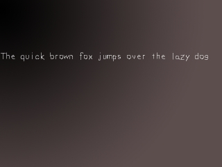

True Type Fonts

Last Updated 2/16/14
Now it's time to render text. SDL does not support *.ttf files natively so the SDL_ttf extension library is needed. SDL_ttf is an extension library that allows you to generate surfaces from true type fonts.You can get SDL_ttf from here.
To install SDL_ttf just follow the extension library tutorial. Installing SDL_ttf is done pretty much the way SDL_image is, so just replace where you see SDL_image with SDL_ttf.
*nix users may also have to link against freetype.
This tutorial covers the basics of using SDL_ttf.
A True Type Fonts tutorial with SDL 2 is now available.
//The surfaces
SDL_Surface *background = NULL;
SDL_Surface *message = NULL;
SDL_Surface *screen = NULL;
//The event structure
SDL_Event event;
//The font that's going to be used
TTF_Font *font = NULL;
//The color of the font
SDL_Color textColor = { 255, 255, 255 };
Here we have our variables. There's the background and screen surface and the event structure from before.
We also have the "message" surface which will hold the surface with the text.
There's also the new data type "TTF_Font" which is the font we're going to use, and there's also the SDL_Color which is the color we are going to render the text. In this case it is set to white.
If you want to know more about the SDL_Color data type, you can look it up in the SDL documentation.
There's also the new data type "TTF_Font" which is the font we're going to use, and there's also the SDL_Color which is the color we are going to render the text. In this case it is set to white.
If you want to know more about the SDL_Color data type, you can look it up in the SDL documentation.
bool init()
{
//Initialize all SDL subsystems
if( SDL_Init( SDL_INIT_EVERYTHING ) == -1 )
{
return false;
}
//Set up the screen
screen = SDL_SetVideoMode( SCREEN_WIDTH, SCREEN_HEIGHT, SCREEN_BPP, SDL_SWSURFACE );
//If there was an error in setting up the screen
if( screen == NULL )
{
return false;
}
//Initialize SDL_ttf
if( TTF_Init() == -1 )
{
return false;
}
//Set the window caption
SDL_WM_SetCaption( "TTF Test", NULL );
//If everything initialized fine
return true;
}
Here's our initialization function.
It's pretty much the same as before but this time we have to initialize SDL_ttf.
SDL_ttf is initialized by calling TTF_Init(). TTF_Init() returns -1 when there is an error.
TTF_Init() has to be called before using any SDL_ttf functions.
SDL_ttf is initialized by calling TTF_Init(). TTF_Init() returns -1 when there is an error.
TTF_Init() has to be called before using any SDL_ttf functions.
bool load_files()
{
//Load the background image
background = load_image( "background.png" );
//Open the font
font = TTF_OpenFont( "lazy.ttf", 28 );
//If there was a problem in loading the background
if( background == NULL )
{
return false;
}
//If there was an error in loading the font
if( font == NULL )
{
return false;
}
//If everything loaded fine
return true;
}
Here's the file loading function. To load the *.ttf font, TTF_OpenFont() must be called.
The first argument of TTF_OpenFont() is the filename of the *.ttf font you want to open, the second argument is the size you want to set the font to when you open it.
When there's an error loading the font, TTF_OpenFont() will return NULL.
The first argument of TTF_OpenFont() is the filename of the *.ttf font you want to open, the second argument is the size you want to set the font to when you open it.
When there's an error loading the font, TTF_OpenFont() will return NULL.
//Render the text
message = TTF_RenderText_Solid( font, "The quick brown fox jumps over the lazy dog", textColor );
//If there was an error in rendering the text
if( message == NULL )
{
return 1;
}
//Apply the images to the screen
apply_surface( 0, 0, background, screen );
apply_surface( 0, 150, message, screen );
//Update the screen
if( SDL_Flip( screen ) == -1 )
{
return 1;
}
Here's the rendering code inside the main() function.
The fastest way to render text is to use TTF_RenderText_Solid().
TTF_RenderText_Solid() takes the font in the first argument, and creates a surface with the text in the second argument with the color in the third argument. TTF_RenderText_Solid() returns NULL when there's an error.
There are other ways to render text, check them out in the SDL_ttf documentation. For some Linux users TTF_RenderText_Solid() won't work, so make sure to upgrade freetype (the library SDL_ttf is based on) and SDL_ttf. If that doesn't work, try using TTF_RenderText_Shaded() instead.
The fastest way to render text is to use TTF_RenderText_Solid().
TTF_RenderText_Solid() takes the font in the first argument, and creates a surface with the text in the second argument with the color in the third argument. TTF_RenderText_Solid() returns NULL when there's an error.
There are other ways to render text, check them out in the SDL_ttf documentation. For some Linux users TTF_RenderText_Solid() won't work, so make sure to upgrade freetype (the library SDL_ttf is based on) and SDL_ttf. If that doesn't work, try using TTF_RenderText_Shaded() instead.
void clean_up()
{
//Free the surfaces
SDL_FreeSurface( background );
SDL_FreeSurface( message );
//Close the font that was used
TTF_CloseFont( font );
//Quit SDL_ttf
TTF_Quit();
//Quit SDL
SDL_Quit();
}
Here we have the clean up function. First we free the background surface, then get rid of the text surface we generated.
We also close the font we opened using TTF_CloseFont(), and then quit SDL_ttf using TTF_Quit().
After that we quit SDL as usual.
We also close the font we opened using TTF_CloseFont(), and then quit SDL_ttf using TTF_Quit().
After that we quit SDL as usual.